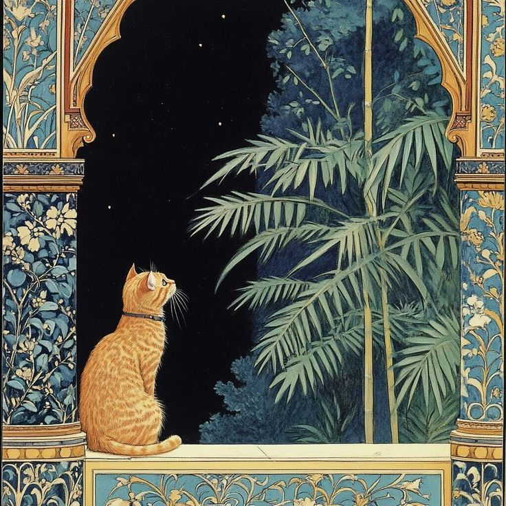
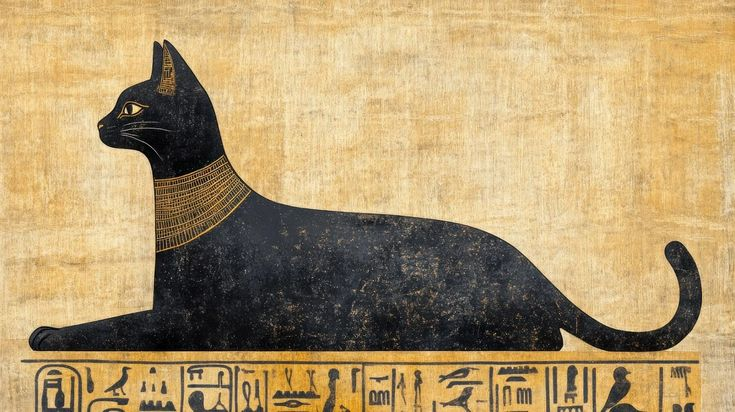
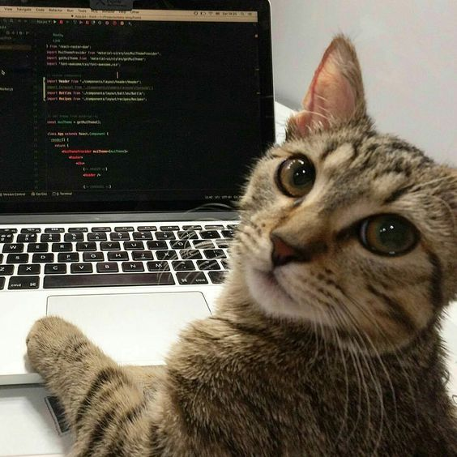
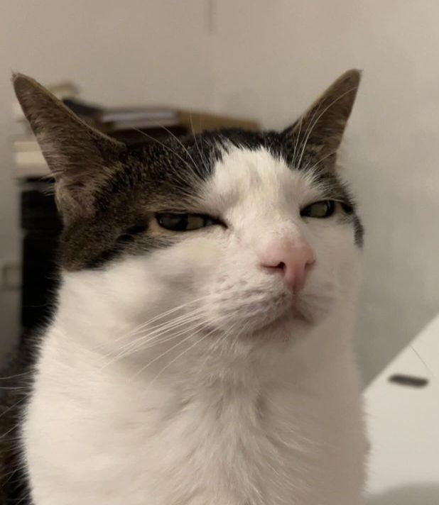
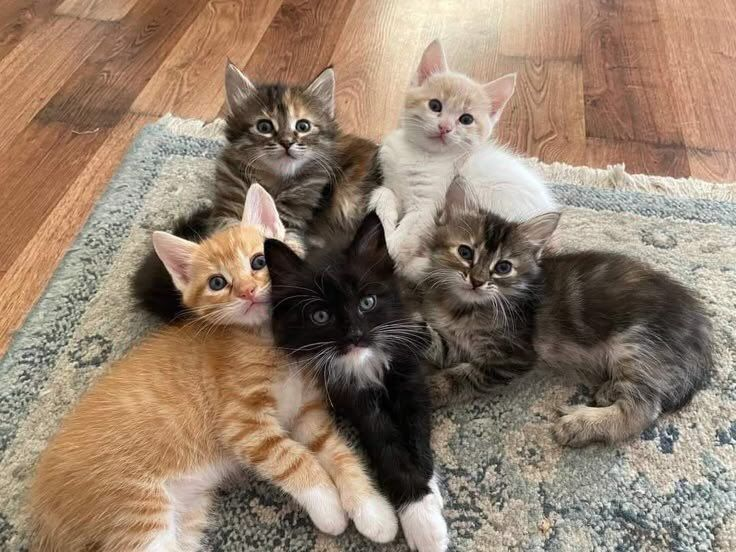

Aqui você vai aprender sobre o mundo dos gatos, conhecer a história
desses animais, descobrir curiosidades, entender algumas de suas características
e conhecer melhor a presença dos gatos no mundo atual. Pequenos, curiosos,
independentes e cheios de personalidade, os gatos convivem com os seres humanos
há milhares de anos e continuam conquistando cada vez mais espaço em nossas casas
e na sociedade.
Uma história que começou há milhares de anos

A história dos gatos domésticos está diretamente ligada à aproximação entre esses
animais e os seres humanos. Acredita-se que os primeiros gatos começaram a se
aproximar das comunidades humanas há cerca de 10 mil anos,
principalmente em regiões do Oriente Médio.
Na época, o desenvolvimento da agricultura fez com que os seres humanos
armazenassem grandes quantidades de grãos, o que acabou atraindo ratos e outros
pequenos animais. Os gatos, naturalmente habilidosos na caça, encontraram nesses
locais uma fonte abundante de alimento.
Essa aproximação acabou sendo vantajosa para os dois lados. Os seres humanos
tinham um animal capaz de ajudar no controle de roedores, enquanto os gatos
encontravam alimento e abrigo. Ao longo de muitas gerações, essa convivência se
tornou cada vez mais próxima, dando origem à relação que conhecemos atualmente.
Os gatos no Antigo Egito

Uma das civilizações que mais marcou a história dos gatos foi o
Antigo Egito. Os egípcios admiravam esses animais por sua
habilidade de caça e também por suas características consideradas especiais.
Os gatos passaram a fazer parte da cultura, da arte e da religião egípcia.
A deusa Bastet, frequentemente representada com características
de gato, estava associada à proteção, à fertilidade e à vida doméstica. Os gatos
também eram representados em pinturas, esculturas e outros objetos encontrados
em sítios arqueológicos.
Com o passar do tempo, os gatos deixaram de estar restritos a determinadas regiões
e foram levados para diferentes partes do mundo. Sua capacidade de adaptação
permitiu que ocupassem ambientes bastante variados.
De caçadores a companheiros
Apesar de atualmente muitos gatos viverem dentro de casas e apartamentos, eles
ainda carregam diversos comportamentos herdados de seus ancestrais selvagens.
A curiosidade, o instinto de caça, a capacidade de observar silenciosamente e a
preferência por determinados espaços elevados são exemplos de comportamentos que
continuam presentes.
Os gatos também possuem uma característica bastante marcante: são animais que
valorizam muito o próprio espaço. Isso não significa que sejam necessariamente
distantes ou que não criem vínculos. Pelo contrário, muitos gatos desenvolvem
relações bastante próximas com seus tutores e podem demonstrar afeto de diferentes
maneiras.
Cada gato possui uma personalidade própria. Alguns são mais brincalhões e
sociáveis, enquanto outros preferem ambientes tranquilos e passam mais tempo
sozinhos. Essa variedade de comportamentos é uma das coisas que torna a
convivência com esses animais tão interessante.
Os gatos no mundo atual

Atualmente, os gatos estão entre os animais de estimação mais populares do mundo.
Estima-se que existam centenas de milhões de gatos domésticos
espalhados pelo planeta. Entretanto, determinar um número exato é difícil,
principalmente porque muitos gatos vivem nas ruas ou não possuem registro.
A presença dos gatos também cresceu muito no ambiente digital. Fotos, vídeos e
memes de gatos estão entre os conteúdos mais populares da internet. Eles aparecem
constantemente em redes sociais, filmes, desenhos, livros e jogos, tornando-se
parte importante da cultura popular.
Além dos gatos domésticos, existem aproximadamente 40 espécies de
felinos selvagens reconhecidas atualmente, dependendo da classificação
utilizada. Leões, tigres, leopardos, onças, linces e guepardos pertencem à mesma
família dos gatos, a Felidae.
Comunicação sem palavras
Embora os gatos não utilizem uma linguagem como a humana, eles possuem diversas
formas de comunicação. O miado, por exemplo, pode ser utilizado
para chamar atenção ou interagir com pessoas.
A posição das orelhas, o movimento da cauda, a postura do corpo e a maneira como
o gato se movimenta também podem transmitir informações.
Até mesmo o modo como um gato pisca pode fazer parte de sua comunicação. Quando
um gato olha para uma pessoa e fecha os olhos lentamente, esse comportamento é
frequentemente associado a uma demonstração de confiança e tranquilidade.
Pequenos animais, grandes personalidades

Uma das características que mais chama a atenção nos gatos é a
individualidade. Mesmo vivendo no mesmo ambiente e recebendo
cuidados semelhantes, dois gatos podem apresentar comportamentos completamente
diferentes.
Alguns adoram brincar e explorar cada canto da casa. Outros preferem observar
tudo de um lugar tranquilo. Há gatos que procuram constantemente a companhia das
pessoas e outros que demonstram carinho de maneiras mais discretas.
Essa combinação de independência, curiosidade e personalidade fez com que os gatos
conquistassem um espaço especial na vida de milhões de pessoas.
Um universo para descobrir

O mundo dos gatos é muito maior do que parece. Por trás de cada comportamento
existe uma história evolutiva, uma adaptação ou uma forma de comunicação. Desde
sua aproximação com os primeiros agricultores até sua presença nas casas e na
internet atualmente, os gatos construíram uma relação única com os seres humanos.
Conhecer melhor esses animais também significa aprender a observar seus
comportamentos, respeitar suas características e compreender que cada gato possui
uma personalidade própria.
Agora que você conhece um pouco mais sobre esse universo, continue explorando
o nosso site e descubra tudo o que os gatos têm a oferecer. A seguir terá um vídeo de como aplicar comprimido via oral nos felinos.